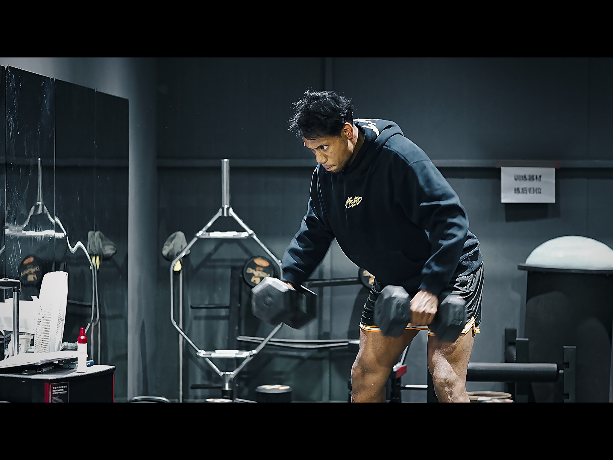
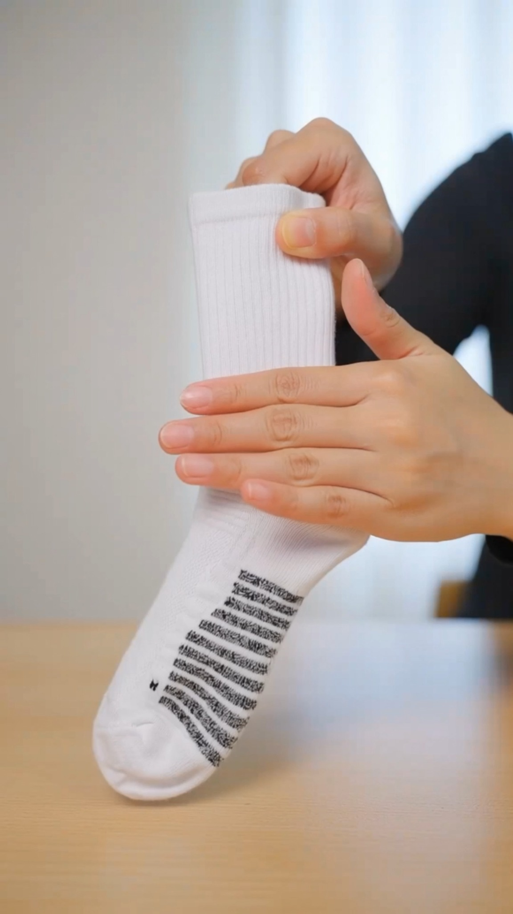
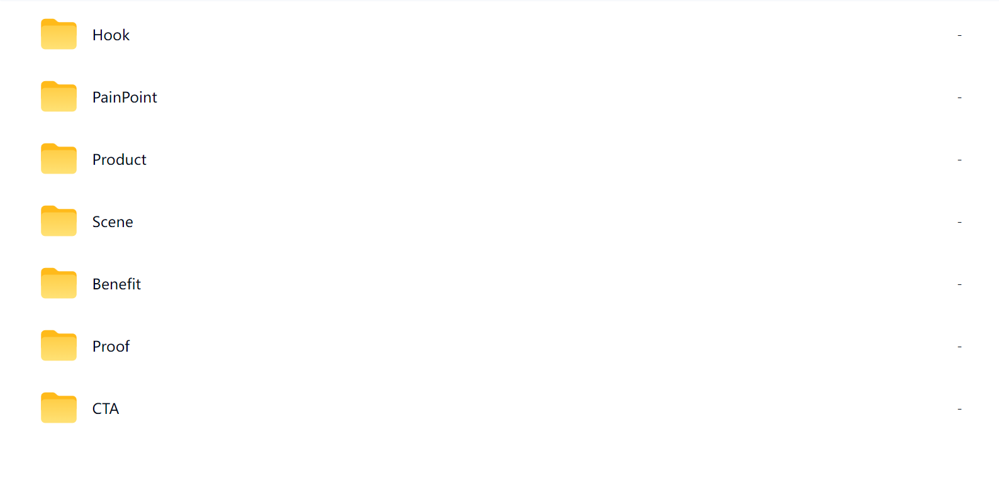
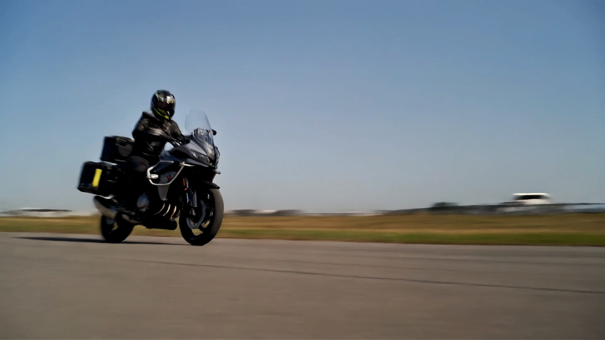

短片视觉语言 / 情绪节奏
One and Only 视觉叙事短片
展示黑白到彩色的影像转变、训练节奏、音乐匹配和短片视觉审美。
COMMERCIAL VIDEO & VISUAL PORTFOLIO
展示短视频广告、创意影像、AI视觉生成、实拍剪辑与商业内容包装能力。
Selected Works
围绕视觉审美、信息流短视频、AI 素材生成和创意广告拍摄，组织成 4 个更贴近岗位的作品板块。

短片视觉语言 / 情绪节奏
展示黑白到彩色的影像转变、训练节奏、音乐匹配和短片视觉审美。

信息流广告 / 运动产品
结合 分镜与脚本素材、实拍素材与制作执行，制作适配竖屏信息流场景的运动产品短视频广告素材。

AI Workflow / 素材生产流程
展示脚本生成、分镜拆解、提示词设计、分镜与脚本和素材库整理的广告素材生产流程。

创意广告短片 / 实拍 + AI
围绕“怪声寻找”的黑色幽默创意，展示实拍分镜、声音设计、AI 辅助生成与广告短片制作能力。
Creative Process
梳理品牌背景、传播目标、目标人群、产品卖点与交付规格。
从用户场景、情绪痛点和消费动机中，提炼创意切入点。
形成核心创意、视觉风格和内容结构，让广告留下记忆点。
拆解镜头、节奏、字幕、声音和关键画面，建立执行路径。
结合实拍、素材采集与 AI 生成，完成画面资产和广告内容制作。
完成剪辑、调色、字幕、音效、封面与多版本输出。
Toolbox
Photoshop
Premiere Pro / 剪映
Runway / 即梦 / Veo / NanoBanana
Sony a6700 / 产品拍摄 / 商业拍摄
About Me
我是南京邮电大学数字媒体技术专业学生，长期接触摄影、短视频剪辑、AI视频生成与课程视觉项目。希望将影像创作、视觉包装与 分镜与脚本能力应用到广告创意与商业内容制作中，持续提升从创意概念、拍摄执行到后期包装的完整表达能力。